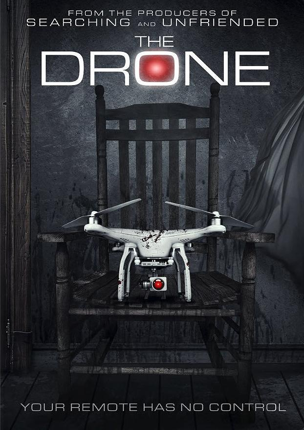

ÖMER KURT
Hakkımda
Merhaba Ben Ömer. Kocaeli'nde İkamet ediyorım. İnsansız hava araçlarına ilgim var ve kendi çapımda quadcopter
yapmaya çalışıyorum. Yazılımda Mobil ve Web programlamaya ilgim var. Front-End eğitiminde öğreneceğim daha çok şeyin
olduğunu anladım. Pes etmek yok! Sözlerime şu atasözüyle son vermek istiyorum. "Taşı delen suyun kuvveti değil,
damlaların sürekliliğidir."
İlgi Alanlarım
- Film
- Dizi
- Kitap
SEVDİĞİM FİLM:
The DRONE

The Drone, bilinç sahibi bir drone tarafından hayatları cehenneme dönen evli bir çiftin hikayesini konu ediyor. akli
dengesi bozuk bir seri katil ölmeden hemen önce bilincini tüketiciler için üretilen bir drone’a aktarır. Bu sayede drone
artık bilinç sahibi olur. Drone'nun hedefinde, yeni evli bir çift olan Rachel (Alex Essoe) ve Chris vardır ve onlara
hayatı zindan etmeye kararlıdır. Hayatları tehlikede olan çift bu sinsi aleti durdurmak için savaşmak zorundadır.